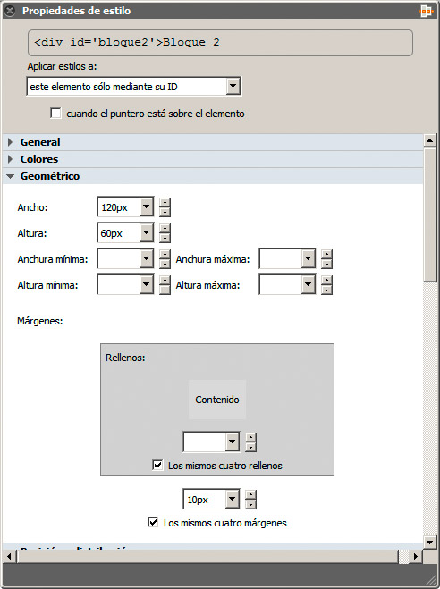
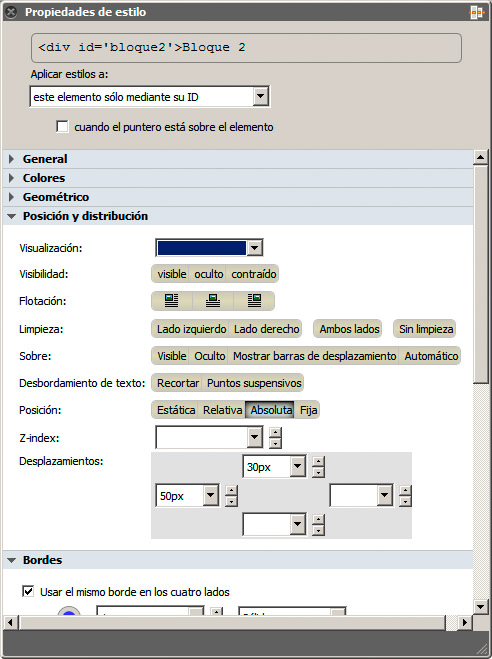
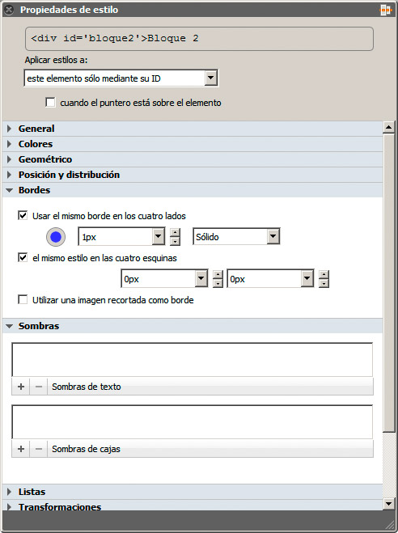
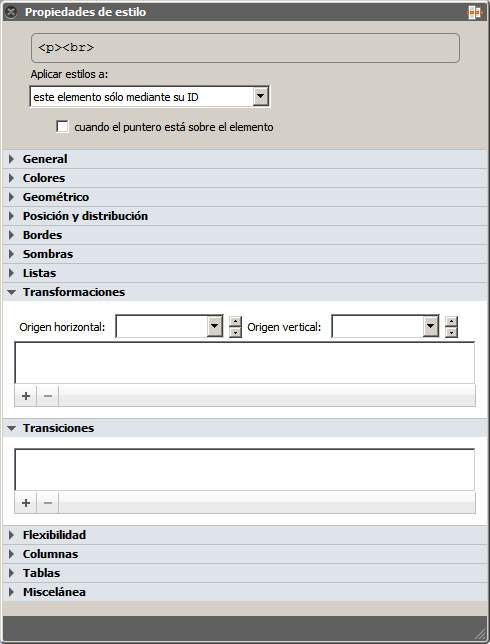

Como hemos podido ver, el número de propiedades crece y crece sin medida. Recordarlas todas, su sintaxis, sus valores y sus pequeños trucos no es sencillo. Por suerte contaremos con diferentes editores para ayudarnos en la tarea.
Con BlueGriffon, nuestro editor de cabecera, podemos aplicar todos los estilos que hemos visto en este módulo. Para hacerlo desplegaremos el panel Propiedades de estilo, seleccionaremos la opción más apropiada en el cuadro Aplicar Estilos a y nos desplazaremos por las diferentes secciones. Éstas son las que hemos visto en este módulo:
- Geométrico: contiene las opciones asociadas a los elementos básicos de una caja, como son sus márgenes, relleno, dimensiones, etc. De hecho, muestra incluso una pequeña representación del concepto de caja, como se recoge en la figura:

- Posición y distribución: incluye las propiedades de display, visibility, float, clean, overflow, position, left y top. Todas ellas van juntas en el espacio de la figura:

- Bordes y Sombras: nos servirán para aplicar estos elementos estéticos a nuestras cajas. En el caso de la sombra encontramos también la propiedad text-shadow, que vimos en el módulo dedicado al texto. La figura muestra ambas categorías de forma visual.

- Transformaciones y Transiciones: las secciones de la figura se emplean para añadir estos dos tipos de efectos. Estos dos grupos de propiedades son perfectas para aplicarlas con el editor, en lugar de hacerlo a mano.

La aplicación de transiciones puede ser un poco más compleja, ya que normalmente requiere la definición de un estado normal para una propiedad y la de un estado :hover (cuando el ratón está sobre el elemento) para esta misma propiedad. Para ello contamos con la casilla cuando el puntero está sobre el elemento, situada en la parte superior del panel Propiedades de estilo. El siguiente vídeo explica cómo se aplica.
Pregunta Verdadero-Falso
Verdadero Falso